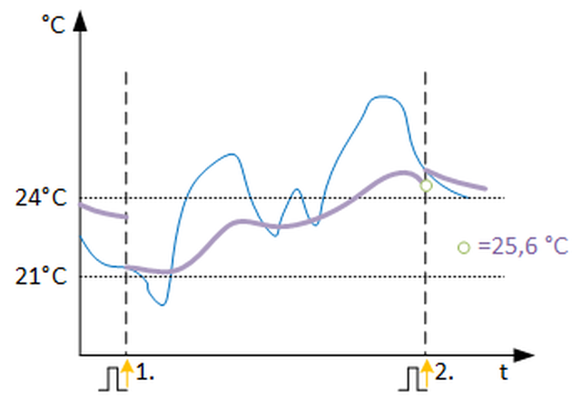

[AVRG_PRD] 一个周期的平均值
功能块AVRG_PRD计算特定时间段内模拟值的平均值和积分值。
AVRG_PRD 计算特定时间段内模拟值的平均值和积分值。
Enable and disable the function
如果该功能启用（EnFnct 和 EnEvl = 1）并且模拟输入信号可靠（Vldty = 1），则模拟输入 [In] 的平均值和积分值在一段时间内确定。
Calculation
当前时间段的平均值显示在 [PrAvrg] 上。
时间段到期后，当前平均值通过脉冲保存为最近时间段 [RctAvrg] 的平均值，并将待处理的输入值设置为新平均值。模拟输入信号的积分（通过时间）作为附加信息生成并通过 [PrIntg] 显示。在脉冲处，当前积分值被保存为最近时间段的积分值，并设置为值 (1/CalcIvl [以秒为单位]) x 输入 [In] 处的有效值。计算间隔[CalcIvl]为1小时，可设置为0.0167，即1分钟。在AVRG_PRD 外部生成的时间周期是通过输入[Imp] 上的上升斜率确定的。如果输入信号无效（Vldty = 0），计算停止。输出的最后一个有效值将被冻结，直到信号再次有效。
Subperiods within time periods
输入 [EnEvl] 可用于评估整个时间段内的子周期。当 EnEvl = 0 时，评估被禁用并且最后的有效值显示在输出上。在一个脉冲中，当前平均值和积分值被保存为最近时间段的值。
Reset
所有当前值和最近值均通过输入 [重置] 上的上升斜率设置为零。
输入 | 描述 | 数据类型 | 默认值 |
|---|---|---|---|
EnFnct | Enable function 启用该功能。 | 布尔值 | 1 |
0 - 该功能被禁用。 | |||
EnEvl | Enable evaluation | 布尔值 | 1 |
0 - 评估被禁用并且输出端的有效值被冻结。 | |||
In | Input 输入信号 | 真实的 | 0.0 |
Imp | Impulse 确定评估时间周期的脉冲输入。上升沿表示新周期的开始。 | 布尔值 | 0 |
0 - 否 | |||
|
Vldty | Validity 当前和最近时间段的平均值和积分值只能使用有效的输入信号来计算。 | 布尔值 | 1 |
0 - 输入无效。 | |||
CalcIvl | Calculation interval 在积分输出处转换结果。可能的计算间隔，例如0.0167 持续 1 分钟 | 真实的 | 1.0 0.0167...3.70E38 |
Reset | Reset 所有值均重置为零。 | 布尔值 | 0 |
0 - 否 | |||
Pers | Persistent | 布尔值 | 0 |
0 - No | |||
|
BaObjRef | BA-Object reference | 结构 | --- |
BaObjRef | Device identifier | 双字 | 16#3FFFFF |
BaObjRef | Object identifier | 双字 | 16#3FFFFF |
BaObjRef | Item identifier | 整数 | -1 |
输出 | 描述 | 数据类型 | 默认值 |
|---|---|---|---|
PrAvrg | Present average | 真实的 | 0.0 |
RctAvrg | Recent average | 真实的 | 0.0 |
PrIntg | Present integral | 真实的 | 0.0 |
RctIntg | Recent integral | 真实的 | 0.0 |
Dstb | Disturbed [Dstb] 指示是否访问了引用的 BACnet 对象。 | 布尔值 | 0 |
ErrCode | Error code indication | 整数 | 0: No error |
= 0 - No error | |||
AVRG_PRD 用于计算一段时间内的平均值和积分值。通过显示特定时间段内的当前值和最近值，可以更早、更快地发现错误，例如错误的控制参数、违反设定值或手动干预。
以下示例基于评估期 = 1 天：
